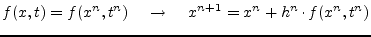
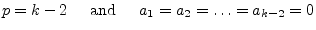
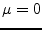

|
(6.3) |
The following differential equation is going to be solved.
This differential equation is transformed into an algorithm-dependent finite difference equation by quantizing and replacing
| (6.4) |
by the following equation.
| (6.5) |
There are several linear single- and multi-step numerical integration methods available, each having advantages and disadvantages concerning aspects of stability and accuracy. Integration methods can also be classified into implicit and explicit methods. Explicit methods are inexpensive per step but limited in stability and therefore not used in the field of circuit simulation to obtain a correct and stable solution. Implicit methods are more expensive per step, have better stability and therefore suitable for circuit simulation.
Beforehand some definitions and explanations regarding the terms often used in the following sections are made in order to avoid bigger confusions later on.
| (6.6) |
In the implicit Euler method the right hand side of eq. (6.3) is substituted by which yields
The backward euler integration method is a first order single-step method.
In the explicit Euler method the right hand side of eq. (6.3) is substituted by which yields
|  | (6.8) |
The explicit Euler method has stability problems. The step size is limited by stability. In general explicit time marching integration methods are not suitable for circuit analysis where computation with large steps may be necessary when the solution changes slowly (i.e. when the accuracy does not require small steps).
For the bilinear (also called trapezoidal) integration method  is substituted by
is substituted by
| (6.9) |
which yields
In each integration step the average value of the intervals beginning and end is taken into account. The trapezoidal rule integration method is a second order single-step method. There is no more accurate second order integration method than the trapezoidal method.
|
|
|
|
![\includegraphics[height=1.8cm]{trapez}](img457.png) trapezoidal
trapezoidal
|
For higher order multi-step integration methods the general purpose method of resolution for the equation
is used. With
 the method is explicit and therefore not
suitable for obtaining the correct and stable solution. When
the method is explicit and therefore not
suitable for obtaining the correct and stable solution. When
 the method is implicit and suitable for circuit simulation,
i.e. suitable for solving stiff problems. For differential equation
systems describing electrical networks the eigenvalues strongly vary.
These kind of differential equation systems are called stiff.
the method is implicit and suitable for circuit simulation,
i.e. suitable for solving stiff problems. For differential equation
systems describing electrical networks the eigenvalues strongly vary.
These kind of differential equation systems are called stiff.
For a polynom of order  the number of required coefficients is
the number of required coefficients is
The coeffcients are choosen to satisfy
| (6.13) |
This can be achieved by the following equation system
The different linear multistep integration methods which can be constructed by the equation system (6.14) vary in the equality condition corresponding with (6.12) and the choice of coefficients which are set to zero.
The Gear [7] formulae (also called BDF - backward differentiation formulae) have great importance within the multi-step integration methods used in transient analysis programs. The conditions
| (6.15) |
due to the following equation system
for the Gear formulae of order . Order yields the implicit Euler method. The example given in the equation system (6.16) results in the following integration formula.
There is no more stable second order integration method than the Gear's method of second order. Only implicit Gear methods with order are zero stable.
The Adams-Bashford algorithm is an explicit multi-step integration method whence
| (6.18) |
is set to satisfy the equation system (6.14). The equation system of the Adams-Bashford coefficients of order 4 is as follows.
| (6.19) |
This equation system results in the following integration formula.
| (6.20) |
The Adams-Bashford formula of order 1 yields the (explicit) forward Euler integration method.
The Adams-Moulton algorithm is an implicit multi-step integration method whence
|  | (6.21) |
is set to satisfy the equation system (6.14). The equation system of the Adams-Moulton coefficients of order 4 is as follows.
| (6.22) |
This equation system results in the following integration formula.
The Adams-Moulton formula of order 1 yields the (implicit) backward Euler integration method and the formula of order 2 yields the trapezoidal rule.
When evaluating the numerical formulations given for both implicit and
explicit integration formulas once rounding errors are unavoidable.
For small values of  the evaluation must be repeated very often and
thus the rounding error possibly accumulates. With higher order
algorithms it is possible to enlarge the step width and thereby reduce
the error accumulation.
the evaluation must be repeated very often and
thus the rounding error possibly accumulates. With higher order
algorithms it is possible to enlarge the step width and thereby reduce
the error accumulation.
On the other hand it is questionable whether the construction of implicit algorithms is really valuable because of the higher computation effort caused by the necessary iteration (indices on both sides of the equation). In practice there is a class of differential equations which can be reasonably handled by implicit algorithms where explicit algorithms completely fail because of the impracticable reduction of the step width. This class of differential equations are called stiff problems. The effect of stiffness causes for small variations in the actual solution to be computed very large deviations in the solution which get damped.
The numerical methods used for the transient analysis are required to be stiffly stable and accurate as well. The regions requirements in the complex plane are visualized in the following figure.
For values of in region II the numerical method must be stable and accurate, in region I accurate and in region III only stable. The area outside the specified regions are of no particular interest.
For the stability prediction of integration algorithms with regard to nonlinear differential equations and equation systems the simple and linear test differential equation
| Re | (6.24) |
is used. The condition Re ensures the solution to be decreasing. The general purpose method of resolution given in (6.11) can be solved by the polynomial method setting
| (6.25) |
Thus we get the characteristic polynom
| (6.26) | ||
| (6.27) |
Because of the conditions defined by (6.14) the above eq. (6.26) can only be true for
| (6.28) |
which describes the inner unity circle on the complex plane. In order to compute the boundary of the area of absolute stability it is necessary to calculate
These equations describe closed loops. The inner of these loops
describe the area of absolute stability. Because
and
only the left half of the complex plane is of particular
interest. An integration algorithm is call zero-stable if the
stability area encloses . Given this condition the algorithm
is as a matter of principle usable, otherwise not. If an algorithms
stability area encloses the whole left half plane it is called
A-stable. A-stable algorithms are stable for any  and all
. Any other kind of stability area introduces certain
restrictions for
and all
. Any other kind of stability area introduces certain
restrictions for  .
.
The figures 6.2, 6.3 and
6.4 visualize the evaluation of
eq. (6.29) for the discussed integration methods. All of
the implicit formulae are zero-stable, thus principally usable. The
(implicit) backward Euler, Gear order 2 and the trapezoidal
integration methods are A-stable. Fig. 6.2 shows why
the Gear formulae are of such great importance for the transient
analysis of electrical networks. With least restrictions for  they can be stabilized.
they can be stabilized.
![\includegraphics[width=1\linewidth]{stabbashford}](img496.png)